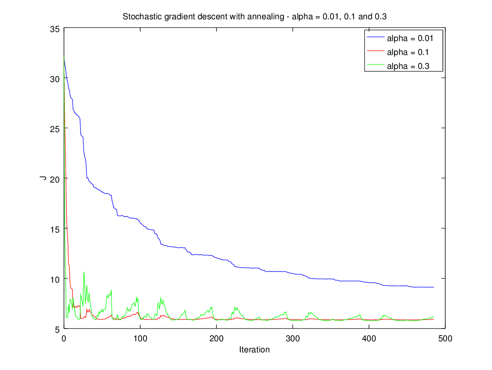

Hyperparameters and Network Tuning
Mihir Patel
October 2017
Introduction
Introduction
Neural networks are very powerful tools that are one of the few types of machine learning approaches robust enough to tackle a variety of problems. Their method of learning, while requiring large amounts of data, can face virtually any challenge. However, they also have considerably more hyperparameters to tune compared to previous methods. How do we determine the number of layers? The number of nodes? How do we regularize? The answers to these questions are critical to squeezing out maximum performance.
Network Design
The first aspect to any structure is determining the size and shape of it. Unfortunately, there really is no good rule on how to do this, or we would have already automated out writing ML algorithms with networks. The obvious ones are the input and output layers, which have to match the specifications of the problem, pairing with the number of features and number of output classes respectively.
As for hidden layers, there really is no good answer. There are some useful tips however. In general, the deeper the network, the more advanced patterns it can learn but the more data and time it requires. Deeper networks are also much more prone to overfitting, as they could potentially just memorize large chunks of the dataset and not learn the general pattern. With deep learning and networks, we assume that our network will not overfit given good hyperparameters and so typically, the deeper the better as long as you have the computational resources for it.
Another good rule is to always narrow down the size of each layer. This helps the network condense information into important higher level features and saves computational resources as you need more lower level features than higher level features. In general, things like this simply just come with experience and trying new combinations if previous methods fail. Usually, the answer is just add more layers if you have the data for it.
Regularization
As I mentioned earlier, neural networks can be prone to overfitting, especially with deep networks. Overfitting, if you don’t remember, involves a machine learning algorithm learning a sub-pattern or exploit that boosts training accuracy but diminishes knowledge of the overall problem and therefore hurts validation accuracy. The best way to prevent this is to stop training when validation accuracy begins to increase. However, we want to supress this from happening as long as possible so that we can potentially better learn the generalized pattern. The first approach involves modifying the loss function.
L1 regularization: Adds the absolute value of the network weights to the error function. \[L + \lambda \sum_{i=1}^{k}|w_i|\] In this case, some hyperparameter lambda is multiplied by the absolute value of the weights. L1 has been shown to be better in feature selection for spare feature spaces. This is a bit complicated to demonstrate and involves Laplace transformations. If you’re interested feel free to look it up.
L2 regularization: Adds the square of the network weights to the error function. \[L + \lambda \sum_{i=1}^{k}w_i^2\] This has been shown to be more effective in basically every other scenario.
Both L1 and L2 regularization help prevent overfitting. \(\lambda\) controls the extent to which the regularization term matters and is generally around \(0.01\). They work by punishing large weights, preventing large numbers and adding small amounts of noise to help generalize the pattern.
Dropout
Another method for regularization is dropout. At each backpropagation step, some random percentage of nodes are ignored. See the diagram below to see how this work. This helps prevent highly dependent nodes and ensure each node actually learns something significant. Another way to think about this is stacking several different learners, where each network post-dropout is a different learner. The only difference is that all these networks are stacked into one model. This has been shown to produce several impressive improvements in performance and robustness. Good values of dropout range from \(0.2\) to \(0.4\) and depend on the layer type, with lower values for things like convolutional layers.

Batch Size
Often, large datasets might contain certain wrong data points or the pattern might not be easy to deduce from a single image (see MRI scans). To better adjust weights, we often forward propagate multiple data points before backpropagating on the results to stabilize training, preventing bad weight adjustments from poor data points.
By setting a batch size, we can control how many points we look at before backpropagating. In general, we pick the largest value that our machine supports based on its RAM size. The larger it is, the more stable the network becomes.
Learning Rate
Learning rate represents the \(\alpha\) in the backpropagation for updating weights and biases: \[W_i = W_i - \alpha \frac{\partial E}{\partial W_i}\] \[b_i = b_i - \alpha \delta_i\] This value determines how much we shift the weights at each step. A high learning rate means we might skip over the ideal weights (we can never reach 2.5 if we go from 2 to 3 at a step size of 1) and a low learning rate means it takes forever to train. A low learning rate means that we could also get stuck in a local minimum and not be able to climb out because each side has a higher error for our learning rate step size.

As this figure shows, a low learning rate (blue) means it goes very slowly. By contrast, a high rate (green) leads to instability and fluctuation. The perfect rate (red) has fast, stable training. In general, we pick a value and then adjust based on speed of training, looking at if the error is slow to adjust or sling-shotting around. This is problem specific and there is no good value, though most libraries provide a default.
In most cases, we use dynamic manipulations of the learning rate. Once we begin to see marginal improvements, we decrease the learning rate so that we can better reach the global minimum. The higher initial rate also speeds up training.
Vanishing Gradient Problem
Earlier I mentioned that adding more layers helps networks better learn patterns. It turns out this isn’t exactly the case. When we reach deeper layers, we see that they begin to train slower and slower, quickly rendering them useless. Why is this the case? Let’s look at how we update the weights. We know we update by:
\[W_i = W_i - \alpha \frac{\partial E}{\partial W_i}\] \[b_i = b_i - \alpha \delta_i\] and that \(\partial E\) with respect to \(\partial W_i\) is:
\[\frac{\partial E}{\partial W_i} = \delta_i x_{i-1}^T\] which means that both weights and biases are dependent on \(\delta\) at each layer. The original delta for the first layer is calculated by:
\[\delta_L = (x_L - y) \odot \sigma'(W_{L}x_{L-1})\]
and every subsequent layer is:
\[\delta_i = W_{i+1}^T\delta_{i+1} \odot \sigma'(W_ix_{i-1})\]
Here is where things get interesting! We see that every subsequent layer’s delta is the previous delta multiplied by a bunch of things. Now, the thing that we care about is the sigmoid function. We know that once a node converges, the derivative of the sigmoid drops off very quickly. As we see from the graph, once a neuron learns its pattern and when to say 0/1, its derivative drops off. This is good, because we don’t want to mess with that value. However, this means all subsequent layers have lower and lower deltas, learning much slower. This means we can’t make things too deep.

Activation Functions
One way to fix the vanishing gradient problem is by modifying the activation function, which changes the derivative.

Sigmoid: \[\frac{1}{1+e^-x}\] This is the function we’ve been traditionally using and solid in general purpose.
Tanh: \[\frac{e^x-e^{-x}}{e^x+e^{-x}}\] This function has a more complicated derivative so it is a bit slower to compute. However, it prevents flatlining as the values range from -1 to 1 instead of 0 to 1. When you don’t multiply by 0, the values aren’t decreasing as much as much. This leads to better performance. There are a few proofs showing this.
Relu: \[max(0,x)\] This function looks very simple. It ignores everything negative and on the right just takes the positive value. This leads to much worse performance. However, the derivative is very, very easy to compute. It’s 0 on the left of the y-axis and 1 on the right. This means it is very fast and doesn’t have the vanishing gradient problem as much because the derivative is constant. In this way, we hurt the performance of each layer but just stack on a ton more layers.
Optimizers
We’ve seen that preventing getting stuck in local minima and efficiently updating weights is hard. To account for this, various modifications to the backpropagation algorithm have been propose to produce more efficient weight updating and increased stabilization. We won’t go into how they work because it is decidedly non-trivial and as complex as learning backpropagation in the first place. However, there are a few key features that we will highlight.
Learning Rate: We already covered this! Go back a few pages.
Momentum: Momentum is a trick to prevent getting stuck in local minima. At each update, we factor in the change that we did the previous step, maintaining larger strides if our previous strides were big and vice-versa.
Decay: At each step, the weights are all multiplied by a constant less than one. This prevents exploding values just like L1 and L2 regularization.
Epsilon: At each step, some fuzz / noise is applied to the weights and biases, helping increase regularization.
Lots of other variables: Read the documentation for specific algorithms.
Here are a brief sample of some optimizers that are most commonly used. There are lots of other ones, though in general they are very ad-hoc or outdated.
(Stochastic/Mini-batch/Batch) Gradient Descent: Normal updates! Basically the run-of-the-mill algorithm that involves the least amount of computation.
RMSProp: Divides learning rate for a given weight by a running average the magnitude of recent gradients. Useful in RNNs.
Adam: Also adapts learning rates for given weights. Similar to RMSProp, but also includes momentum-like functionality. In general, this is the best one to use.